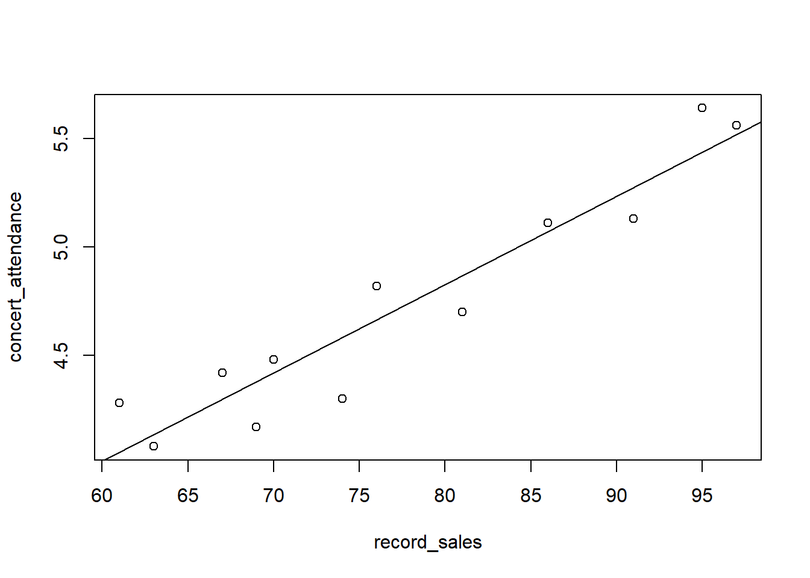

integer(0)The methods of Analysis of Variance (ANOVA) and regression analysis are fundamental tools in statistical modeling, enabling researchers to explore relationships between variables and test hypotheses about group differences and linear associations.
This chapter introduces the principles and applications of ANOVA, which is used to determine whether the means of multiple groups differ significantly, particularly when dealing with categorical explanatory variables.
Building on this foundation, the chapter then explores Simple Linear Regression, which models the relationship between a single predictor and a response variable, and extends to Multiple Linear Regression, where two or more predictors are used to explain or predict the behavior of a dependent variable.
Together, these techniques form a powerful framework for data analysis, supporting both inference and prediction in a wide range of scientific and practical contexts.
The One-Way Analysis of Variance (ANOVA) is a parametric statistical method used to test whether there are statistically significant differences between the means of three or more independent groups.
It extends the logic of the independent samples t-test, which is limited to comparing the means of two groups, by simultaneously analyzing variability among multiple groups within a single unified framework.
An experimental design is a plan and structure used to test hypotheses, where the researcher controls or manipulates one or more variables. It includes both independent and dependent variables..
Many different types of experimental designs are available to researchers. In this chapter, we focus on one of the simplest experimental designs: the completely randomized design. Other design types such as randomized block designs and factorial experiments are beyond the scope of this chapter.
In an experimental design, an independent variable may either be a treatment variable or a classification variable.
A treatment variable is one that the experimenter controls or modifies during the experiment.
A classification variable refers to a characteristic of the experimental subjects that existed prior to the experiment and is not a result of the experimenter’s manipulation or control.
Independent variables are also referred to as factors.
Levels are the subcategories or specific values of the independent variable used by the researcher in the experimental design.
The other key variable in an experimental design is the dependent variable.
A dependent variable is the observed response to the different levels of the independent variable.
A completely randomized design includes only one independent variable, which has two or more treatment levels or categories.
When the independent variable has only two treatment levels or categories, the design is equivalent to that used for comparing the means of two independent populations, where the independent t-test is typically used for analysis.
A Completely randomized design is analysed by a one-way analysis of variance (ANOVA).
In general, when analyzing \(k\) samples using one-way ANOVA, the hypotheses tested are:
\(H_0\): \(\mu_1 = \mu_2 = \mu_3 = \dots = \mu_k\)
\(H_1\): \(\text{At leats one of the means is different from the others}\)
In one-way ANOVA, the total variance in the data is partitioned into the following two components:
the variance resulting from the treatment
the error variance or the portion fo the total variance unexplained by the treatment
As part of the analysis, the total sum of squares (i.e., the total deviation of observations from the overall mean) is divided into two additive and independent parts: the sum of squares due to treatment (tretment variation) and the sum of squares due to error (error variation).
\[\sum_{i=1}^{n_j}\sum_{j=1}^{C}(x_{ij}-\bar{x})^2 = \sum_{j=1}^{C}n_j(\bar{x_{j}}-\bar{x})^2 + \sum_{i=1}^{n_j}\sum_{j=1}^{C}(x_{ij}-\bar{x_j})^2\]
where:
\(i\) = particular member of a treatment level
\(j\) = a treatment level
\(C\) = number of treatment levels
\(n_j\) = number of observations in a given treatment level
\(\bar{x}\) = grand mean
\(\bar{x_j}\) = mean of the treatment group or level
\(x_{ij}\) = individual value
Contd….
ANOVA compares the relative sizes of the treatment variation and the error variation.
If a significant difference in treatments is present, the treatment variation should be large relative to the error variation.
Several important assumptions underlie analysis of variance.
Assumption #1: Observations are drawn from normally distributed populations.
That is each sample is taken from a normally distributed population.
Assumption #2: Variances of the populations are equal.
That is the variance of data in the different groups should be the same.
Assumption #3: Observations represent random samples from the populations.
\[SST = \sum_{i=1}^{n_j}\sum_{j=1}^{C}(x_{ij}-\bar{x})^2\]
\[SSC = \sum_{j=1}^{C}n_j(\bar{x_{j}}-\bar{x})^2\]
\[SSE = \sum_{i=1}^{n_j}\sum_{j=1}^{C}(x_{ij}-\bar{x_j})^2\]
\[df_T = N-1\]
\[df_C = C-1\]
\[df_E = N-C\]
\[MSC = \frac{SSC}{df_C}\]
\[MSE = \frac{SSE}{df_E}\]
\[F = \frac{MSC}{MSE}\]
Example
Automated hand sanitization plays a crucial role in promoting hygiene in public and private spaces.. In response to this, a company designed a portable hand sanitizer dispenser robot. Suppose the quality control engineer of the company wants to analyse the response time of four portable hand sanitizer dispenser robots before releasing them to the market.
Portable hand sanitizer dispenser robots
What is the dependent variable in this design?
Response time
Is there a significant difference in the mean response time of 24 tasks carried out by the four portable hand sanitizer dispenser robots?
| Robot 1 | Robot 2 | Robot 3 | Robot 4 |
|---|---|---|---|
| 6.33 | 6.26 | 6.44 | 6.29 |
| 6.26 | 6.36 | 6.38 | 6.23 |
| 6.31 | 6.23 | 6.58 | 6.19 |
| 6.29 | 6.27 | 6.54 | 6.21 |
| 6.4 | 6.19 | 6.56 | \(\quad\) |
| \(\quad\) | 6.50 | 6.34 | \(\quad\) |
| \(\quad\) | 6.19 | 6.58 | \(\quad\) |
| \(\quad\) | 6.22 | \(\quad\) | \(\quad\) |
Refer Python Lab session
Examples
The first step in determining the equation of the regression line that passes through the sample data is to establish the equation’s form.
In mathematics, the equation of a line can be written as \[y=mx+c\] where: \(m\) = slope of the line \(c\) = \(y\) intercept of the line.
In statistics, the slope-intercept form of the equation of the regression line through the population points is: \[\hat{y} = \beta_0+\beta_1x\] where: \(\hat{y}\) = the predicted value of \(y\) \(\beta_0\) = the population \(y\) intercept \(\beta_1\) = the population slope.
For any specific dependent variable value, \(y_i\): \[y_i = \beta_0+\beta_1x_i+\epsilon_i\] where: \(x_i\) = the value of the independent variable for the \(i\)th value \(y_i\) = the value of the dependent variable for the \(i\)th value \(\beta_0\) = the population \(y\) intercept \(\beta_1\) = the population slope \(\epsilon_i\) = the error of prediction for the \(i\)th value.
Unless the points being fitted by the regression equation are in perfect alignment, the regression line will miss at least some of the points.
In the above equation, \(\epsilon_i\) represents the error of the regression line in fitting these points. If a point is on the regression line, \(\epsilon_i = 0\)
Deterministic models
For a value of \(x=5,\) the exact predicted value of \(y\) is \[\hat{y} =1.68 + 2.40\times 5 = 13.68\].
Example
Probabilistic models
A probabilistic model is one that includes an error term that allows for the \(y\) values to vary for any given value of \(x\).
The deterministic regression model is \[y=\beta_0+\beta_1x\]
The probabilistic regression model is \[y=\beta_0+\beta_1x+\epsilon.\]
\(\beta_0+\beta_1x\) is the deterministic portion of the probabilistic model, \(\beta_0+\beta_1x+\epsilon.\)
In deterministic model, all points are assumed to be on the line and in all cases \(\epsilon\) is zero.
\[\hat{y} = \hat{\beta_0}+\hat{\beta_1}x\] where: \(\hat{y}\) = the predicted value of \(y\) \(\hat{\beta_0}\) = the sample \(y\) intercept \(\hat{\beta_1}\) = the sample slope
Example
The data in the table are the twelve observations corresponding to concert attendance (in thousand) and total worldwide CD sales by the performing artist (or band) in the previous year (also in thousand).
| Number of CD sales (’000) \(x\) | Concert attendance (’000) \(y\) | \(x^2\) | \(xy\) | Predicted value \(\hat{y}\) | Residual \(y-\hat{y}\) |
|---|---|---|---|---|---|
| 61 | 4.280 | ||||
| 63 | 4.080 | ||||
| 67 | 4.420 | ||||
| 69 | 4.170 | ||||
| 70 | 4.480 | ||||
| 74 | 4.300 | ||||
| 76 | 4.820 | ||||
| 81 | 4.700 | ||||
| 86 | 5.110 | ||||
| 91 | 5.130 | ||||
| 95 | 5.640 | ||||
| 97 | 5.560 |

integer(0)Least squares analysis cntd…
Least squares analysis cntd…
Residual plot
Normal Q–Q (quantile-quantile) Plot
\[r = \sqrt{R^2}\]
General equation for the probabilistic multiple linear regression model
\[y=\beta_0+\beta_1 x_1+\beta_2 x_2+\beta_3 x_3+ \dots + \beta_k x_k+ \epsilon\]
where
\(y =\) the value of the dependent variable/ response variable
\(\beta_0 =\) the regression constant, or intercept
\(\beta_1 =\) the partial regression coefficient for independent variable 1
\(\beta_2 =\) the partial regression coefficient for independent variable 2
\(\beta_k =\) the partial regression coefficient for independent variable k
\(k =\) the number of independent variables.
The partial regression coefficient of an independent variable, \(\beta_j,\) represents the increase that will occur in the value of y from a one-unit increase in that independent variable if all other variables are held constant.
The partial regression coefficients occur because more than one predictor is included in a model.
the simplest multiple regression model is one constructed with two independent variables, where the highest power of either variable is 1. The regression model is
\[y=\beta_0+\beta_1 x_1+\beta_2 x_2+ \epsilon\]
The constant and coefficients are estimated from sample information resulting in the following model
\[\hat{y}=\hat{\beta_0}+\hat{\beta_1} x_1+\hat{\beta_2} x_2\] - Simple regression models yield a line that is fit through data points in the \(xy\) plane.
In multiple regression analysis, the resulting model produces a response surface.
The procedure for determining formulas to solve for multiple regression coefficients is similar. the formulas are established to meet an objecitve of minising the sum of squares of error for the model.
Example
A real estate study was conducted in a major city to investigate the factors influencing the market price of residential homes. Data were collected on 23 houses, recording the market price (in thousands of dollars), the size of each house in square metres, and the age of each house in years. As a data scientist working for a real estate company, you are required to develop a multiple linear regression model to predict the market price of a house based on its size and age.
Using the given dataset, perform an exploratory data analysis to summarize and visualize the relationships among the variables.
Fit a multiple linear regression model with market price as the dependent variable and the other two variables as predictors.
Clearly interpret the regression coefficients, assess the statistical significance of the predictors, and evaluate the overall fit of the model.
Use your model to predict the price of a house that is 250 square metres in size and 12 years old, and discuss any assumptions made in the regression analysis.
Black, K., Asafu-Adjaye, J., Khan, N., Perera, N., Edwards, P., & Harris, M. (2007). Australasian business statistics. John Wiley & Sons.
Montgomery, D. C., Peck, E. A., & Vining, G. G. (2012). Introduction to linear regression analysis (Vol. 821). John Wiley & Sons.
Salvatore, D., & Reagle, D. (2002). Statistics and Econometrics, Schaum’s Outline Series.